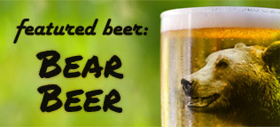

Menu
Beers on tap: $3 per 24oz glass 'Pint+'
Beer Sampler - $6
Beer is like a lot of things in life, sometimes you want it all. Thankfully with beer, we can help. Our sampler has a 12oz glass for each of our beers and an unlimited heaping of our chips and salsa, to help you prepare for the next glass. It's rather hard to beat.

Bear Beer
This dark amble ale that showcases our fantastic barley and the skill of our roasters. It's complex with a bit of roasted sweetness up front and a barley flavor on the finish. Pair it with a steak for a real treat.
The White Beer
A Belgian style wheat beer, our White beer is made with wheat, oats and a special blend of fruits and spices. Think about it as a fun beer, cheerful, complex, and playful.
An Ale for the Masses
This is our staple beer. An ale that is brewed with so much care that it manages to win taste buds the world over. It's simple, starting with a nice malted barley flavor on the tongue and cascade hops in the nose; and finishing with a bit of satisfying bitterness on the back of the palette. Pair it with a burger, we dare you.
A serious IPA
IPA's have gotten a bit of a bad treatment recently. All hops and no beers is what we taste. So we set out to fix it. Our IPA show cases our hops without crushing your tongue in the bitterness. Sip it an savor, it took a lot of effort to figure this one out.
Don't doubt the stout
Dark beers are like music, the one you like will sometimes make your parents cry. We aren't afraid of this, so instead of making a beer that everyone will like, but no one will love, we made a true dark beer most will love. If you don't like it, send it back and we'll give you a pint of your choice for free. So it's risk free, unlike music and your parents.
Appetizers
Awesome Haus Battered Calamari - $9
A proper plate of deep-fried Calamari rings, using our secret beer batter (could it be any other?). A light seasoning helps make this a party favorite
Awesome Haus Battered Onion Rings - $6
Thick onion slices using our secret beer batter (could it be any other?) these rings will crunch in your mouth, then melt on your tongue. Is there anything better? Yes there is: beer. Pair em.
Smoke-'em-out Chicken Wings - $8
Crispy wings dowsed in our Awesome Haus BBQ sauce, then grilled to perfection.
Best of the West Nachos - $5
We don't make them gummy, or greasy, we make 'em good. Chips from local tortillas made today, topped withr cheese, ground beef, jalapenos, habaneros, grilled onions, roasted tomatoes and secret salsa.
All of the Above platter - $20
Sometimes it's hard to decide what to eat. This platter, which is perfect for a party of 4, has plenty of everything: calamari rings, onion rings, chicken wings, Nachos… You get the idea.
Burgers
Burger Classic - $9.50
A burger, cooked just how you like it, on a bun with a little mayo. Savor our dry aged beef with our fantastic potato bun and experience the proverbial drop kick on all your senses.
Cheeseburger Classic - $9.50
Our Burger Classic with aged California cheddar, melted of course, on our fantastic bun. Is there a better description of heaven? Yes, this plus a beer.
Haus Bleu Burger - $11
Topped with the best bleu cheese our cooks have ever tasted. Show the doubters your smile and messy hands after this burger and they'll understand our burger means business.
Pineapple Teriyaki Burger Bliss - $11
Cheese and Teriyaki-marinated pineapple atop of a burger are essentially inseparable. If you have doubt, try it with a beer. That mix hasn't failed, ever.
Avocado Burger of California - $11
Celebrate California with a whole avocado and glued in place with the best jack cheese this side of the Rockies.
BBQ Awesome Burger - $13
Pick your BBQ awesomeness: Beef or Pork. This burger is dry rubbed, hot smoked for hours, and then served on a potato bun with our award-winning BBQ sauce.
Steaks
Ribeye
12oz - $18 / 16oz - $24 / 20oz - $28
Heavy duty, full of flavor. Bring it on in 3 sizes.
Bacon-wrapped Fillet Mignon
6oz - $18 / 8oz - $20
Tender, melt-in-your-mouth flavor.